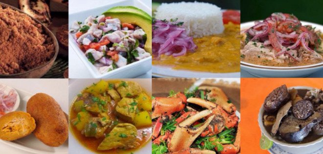

Definición
En la ciudad de Guayaquil es posible encontrar restaurantes de comida típica, internacional y especializada en diferentes lugares de la ciudad. Uno de los principales sectores culinarios de la ciudad es el barrio Urdesa, lugar donde se puede encontrar tanto restaurantes nacionales como extranjeros.